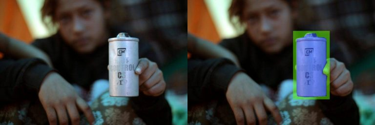
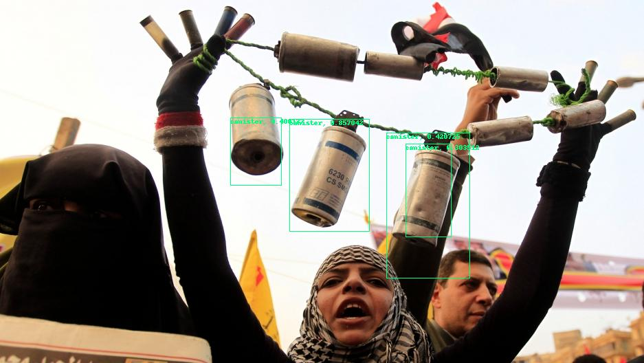

This was research work with Forensic Architecture, aimed at helping human rights investigators find tear-gas canisters in large volumes of open-source video. The central problem was data scarcity: the object mattered, but there were not enough annotated examples for a conventional detector to behave reliably.
I worked on a limited-data detector for tear-gas canisters, experimenting with training sets as small as 10 images and scaling up to around 300 canister examples. I also tested synthetic augmentation to see whether generated examples could help the model generalise beyond the tiny labelled set.
Why it mattered
Human rights investigations often involve scanning image, audio, and video archives for small moments that deserve closer inspection. Manual search is slow, and the visual evidence is often noisy, compressed, or collected from uncontrolled sources.
The detector was a way to make discovery and triage faster: not replacing an investigator, but surfacing candidate evidence that could be reviewed, archived, and connected back to an investigation.

